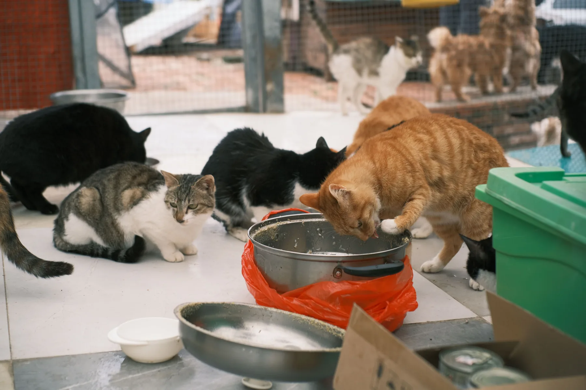

Composite pathway · Street rescue
Safety first, then assessment
An injured animal may need location verification, safe transport, veterinary triage, pain management, vaccination planning, and a recovery placement before adoption can be considered.
Rescue stories
These composite stories show common rescue pathways without pretending that fictional cases are real. The sector data and operational references are linked to official sources.
An injured animal may need location verification, safe transport, veterinary triage, pain management, vaccination planning, and a recovery placement before adoption can be considered.

For community animals, welfare may involve feeding coordination, sterilisation, vaccination, treatment, and responsible return rather than permanent sheltering.

Follow-up helps adopters understand decompression, routine changes, medical needs, training, and when to ask for professional support.

A quiet settling area, supervised child interactions, secure windows, gradual introductions, and early veterinary review all improve the transition.
A real organisation example
The figure shows how rescue, shelter, sterilisation, vaccination, and adoption can operate as connected parts of a long-term welfare system.
Source: Blue Cross of India What We Do page.
Humane population management
India’s Animal Birth Control Rules, 2023 provide the regulatory framework for street-dog population management. Adoption is valuable, but it cannot replace coordinated public-health and animal-welfare systems.